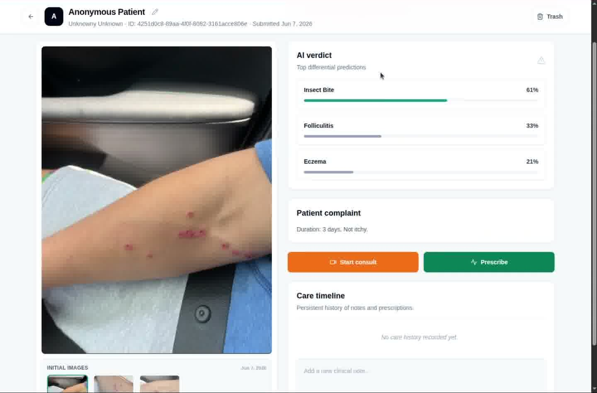
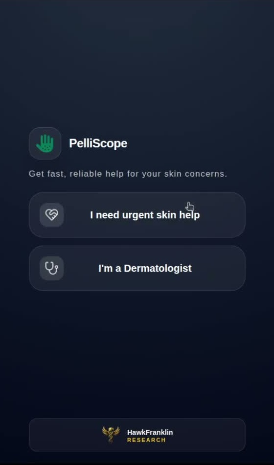
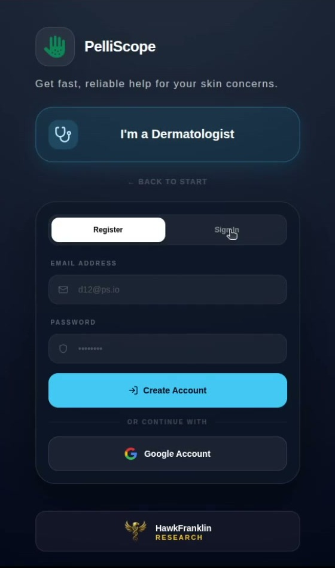
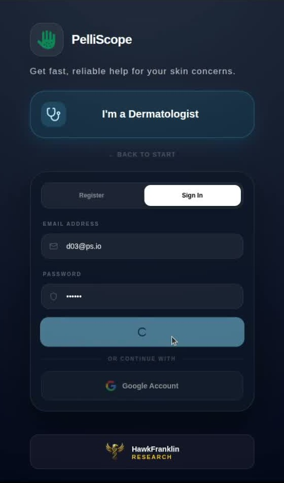
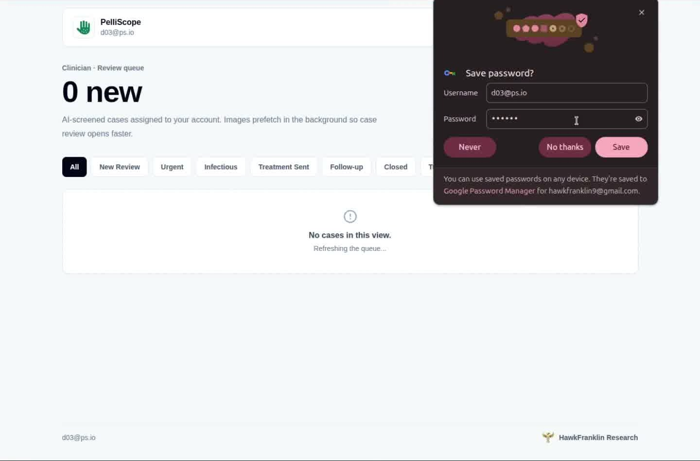
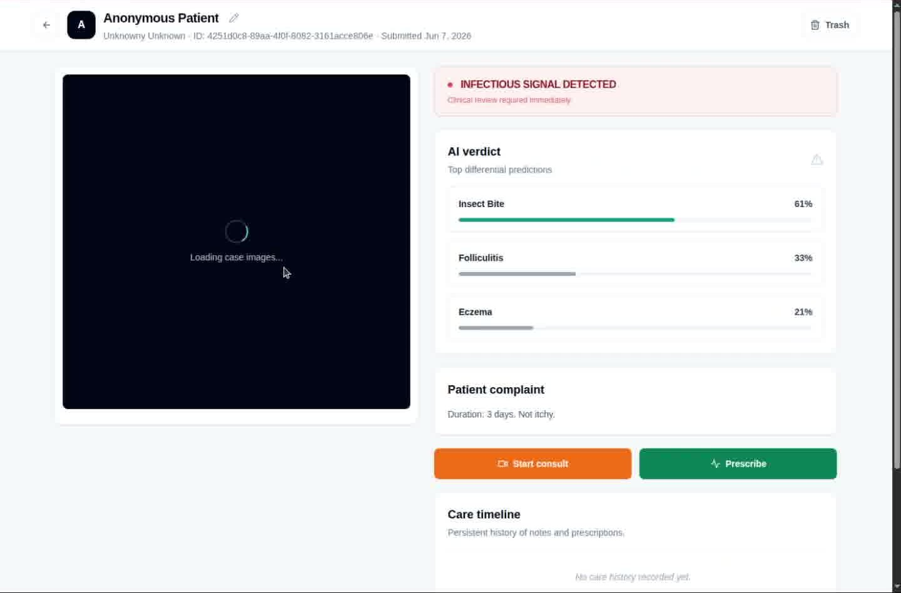
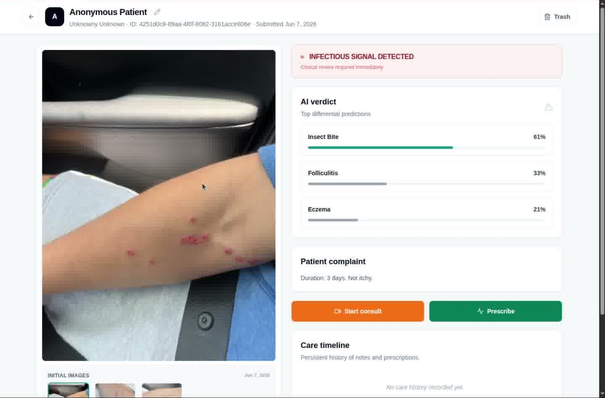
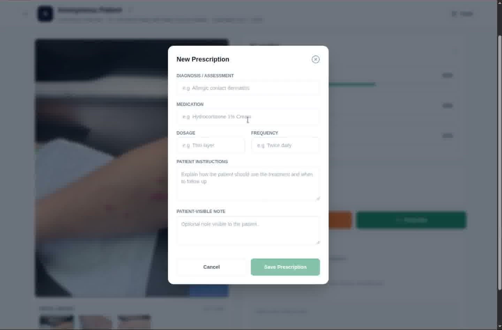
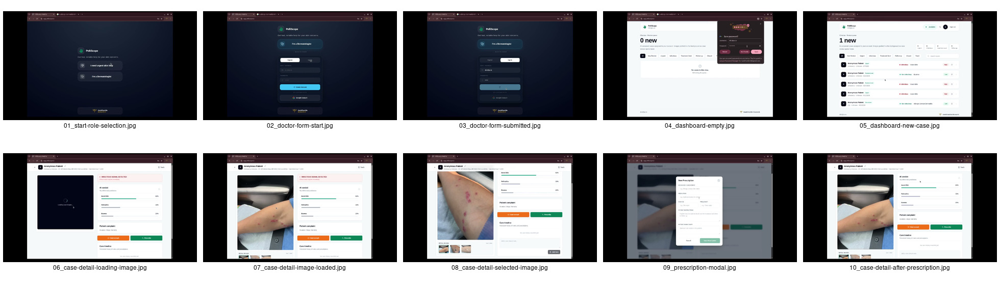

1
Role selection
Choose urgent skin help or dermatologist mode.
 PelliScope Complete Visuals
PelliScope Complete Visuals
Complete screenshot catalogue
A single static page containing the patient and doctor workflows: patient intake, image upload, AI screening, clinician selection, dermatologist onboarding, review queue, case detail, and prescription flow.


Patient flow
Mobile-style patient screenshots are cropped to the centered app surface so catalogue tools can read the product UI without Chrome borders or recording background.
Choose urgent skin help or dermatologist mode.

Create a patient account or continue with Google.

Returning patient signs in before entering the screening flow.

Begin screening or reopen submitted cases.

Guided upload screen with checklist and camera option.

Skin photos are attached before infectious screening starts.

The product analyzes visible patterns and possible infectious signals.
AI report shows infectious status, differential, and next action.

The patient chooses the clinician who receives the case.

Final confirmation after the case is sent for review.
Doctor onboarding
Doctor entry screens are also cropped to the centered product surface because the early clinician flow is captured inside the same mobile-style browser layout.

The clinician chooses dermatologist mode from the first screen.

The dermatologist enters account details for access.

The flow moves into sign-in and account status handling.
Doctor workspace
The doctor workspace is kept as wide screenshots so the queue, case image, AI verdict, complaint, prescription action, and care timeline remain visible together.

Doctor queue before assigned cases arrive.

Assigned cases, filters, urgency, and infectious labels.

AI verdict is visible while submitted photos load.

Clinical review surface with image, verdict, complaint, and actions.

Doctor switches between submitted image thumbnails.

Diagnosis, medication, dosage, instructions, and patient notes.
Doctor returns to case detail with the review context preserved.
Overview sheets
These overview sheets remain available on the same page for tools that prefer stitched screenshots over individual flow steps.

All patient workflow screenshots in one image.

All doctor workflow screenshots in one image.